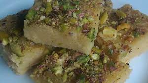

Besan (gram-flour) Halwa

Description
If you like the flavour of besan (chickpea flour) in sweets, you will love this halwa.
I often make this halwa instead of 'Besan Ladoo' or 'Mysore Pak.' My kids gobble it up even before it has a chance to cool down.
Ingredients
- 1 cup milk
- ½ cup water
- ½ teaspoon ground cardamom
- ¾ cup ghee (clarified butter)
- 1 cup chickpea flour (besan)
- 1 cup sugar
Steps
- Bring the milk and water to a simmer in a saucepan over medium-low heat; stir the cardamom into the mixture.
Set aside.
-
Melt the ghee in a shallow skillet over medium heat; stir the chickpea flour into the melted ghee and cook until fragrant, about 10 minutes.
Add the sugar and stir to incorporate. Slowly pour the milk mixture into the skillet while stirring to avoid lumps.
Continue cooking and stirring until the halwa pulls away from the sides of the pan, 10 to 15 minutes.
Serve hot or spread the mixture into a rimmed plate and allow to cool.
Cut into squares and serve.